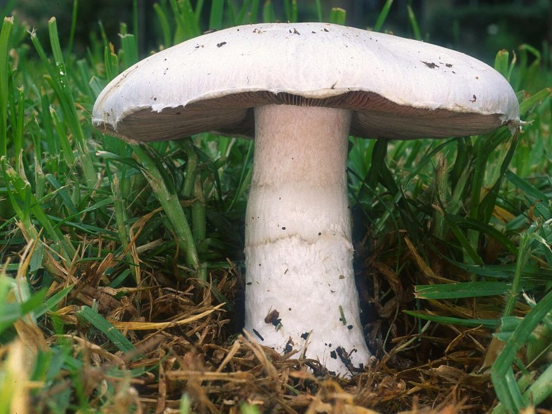

जंगली खुम्बीField Mushroom
Agaricus campestris · Agaricaceae · FNG-0006

- Scientific name
- Agaricus campestris L.
- Family
- Agaricaceae
- Hindi
- जंगली खुम्बी
- Status here
- native
- IUCN
- not evaluated
When to look कब देखें
Expected mainly in August, September, October.
जंगली खुम्बी / Field Mushroom
Agaricus campestris L. — Agaricaceae
जंगली खुम्बी (गोबर छत्ता या खुम्बी) — उत्तर प्रदेश के घास के मैदानों, मवेशियों के चरने वाले क्षेत्रों और गोबर-युक्त नम खेतों में मानसून के दौरान (अगस्त से अक्टूबर) उगने वाला एक आम छातानुमा कवक (mushroom) है। इसकी टोपी (cap) सफेद और चिकनी होती है जो उम्र के साथ थोड़ी भूरी हो जाती है। इसके नीचे के हिस्से में शुरू में गुलाबी रंग की गिल्स (gills) होती हैं जो पकने पर गहरी चॉकलेट-भूरी हो जाती हैं। इसके तने (stipe) पर एक नाजुक छल्ला (ring) होता है। यह एक खाद्य मशरूम है, लेकिन इसे इकट्ठा करने से पहले अत्यंत सावधानी बरतनी चाहिए। महत्वपूर्ण चेतावनी: जंगली मशरूम खाने से पहले एक प्रशिक्षित कवक विज्ञानी (mycologist) द्वारा सटीक पहचान आवश्यक है, क्योंकि कई विषैले मशरूम (जैसे अमानिता प्रजातियां) देखने में बिल्कुल इसके जैसे लगते हैं।
Quick Identification त्वरित पहचान
| Feature | Description |
|---|---|
| Cap (Pileus) | Dry, smooth, convex white cap (3–10 cm diameter), flat at maturity, turns yellowish-brown when bruised |
| Gills (Lamellae) | Free from the stem; bright pink when young, turning dark chocolate-brown to black as spores mature |
| Stem (Stipe) | Cylindrical white stem (3–8 cm tall, 1–2 cm diameter) with a thin, single, fragile white ring (annulus) |
| Volva | Absent at the base of the stem (a key feature distinguishing it from deadly Amanita species) |
| Flesh & Odor | White flesh, does not change color significantly when cut, carries a pleasant, mild mushroom-like smell |
Field tip: Look for a classic white umbrella-like mushroom in open grassy fields. Check underneath: if the gills are bright pink or dark chocolate-brown (not white) and there is a ring on the stem but no cup/volva at the root, it is likely Agaricus campestris.
Morphology आकारिकी
Biometrics (typical measurements for specimens in Basti):
| Feature | Measurement |
|---|---|
| Cap diameter | 3–10 cm |
| Stipe height | 3–8 cm |
| Stipe diameter | 1–2 cm |
| Spore print colour | Dark chocolate-brown |
Cap & Gills: The cap is hemispherical when young, expanding to flat-convex. The gills are crowded and free from the stipe, which prevents stipe tissue from interfering with spore release.
Stipe & Ring: The stipe is solid, white, tapering slightly at the base. The ring is situated on the upper half of the stipe, representing the remnants of the partial veil that protected the young gills.
Ecology and Substrate पारिस्थितिकी और आधार
Agaricus campestris is a saprotrophic fungus. It obtains nutrients by decomposing organic matter, particularly dead grass roots and herbivore dung in the soil. It grows directly on soil in pastures, lawns, and grassy agricultural edges in Basti. It is commonly found growing in "fairy rings" (concentric circles) as the underground mycelium spreads outwards searching for fresh nutrients.
Life Cycle / Phenology जीवन चक्र
- Mycelial Growth: The vegetative mycelium remains active underground throughout the year, consuming organic matter.
- Fruiting: Prompted by the drop in temperature and high soil saturation during the late monsoon (August–October), the mycelium produces the visible spore-bearing mushrooms (basidiocarps).
- Spore Release: Millions of microscopic chocolate-brown spores are released from the gills and carried by air currents.
Associated Species and Decay Role सहजीवी संबंध और अपघटन कार्य
- Nutrient Cycle: Breaks down complex cellulose and organic matter in cattle pastures, releasing nitrogen and phosphorus back into the soil to benefit grass growth.
- Insect Habitat: Young mushrooms are frequently colonized by fungus gnat larvae (Mycetophilidae) which tunnel through the flesh.
Agricultural / Human Relevance कृषि प्रासंगिकता
Edible pasture resource and toxin hazards.
- Edibility: It is highly edible and tasty when young. However, expert identification by a trained mycologist is essential before consuming any wild mushroom. Many toxic species resemble edible ones.
- Accidental Poisoning Hazards: The most critical risk is confusing it with the deadly Destroying Angel (Amanita bisporigera) or death cap species which have white gills and a cup-like volva at the stem base. In Basti, children should be educated about these key differences (pink/brown gills of Agaricus vs. white gills and volva of Amanita).
- Foraging tradition: In Basti villages, families collect "Jungli Khumbi" early in the morning from grazing commons after heavy autumn showers to cook a traditional fresh mushroom curry.
Expected Locally स्थानीय रूप से अपेक्षित
Not a field record. Written from published accounts for eastern Uttar Pradesh. No confirmed local sighting yet — if you have seen it, that is what the atlas needs.
अभी तक स्थानीय पुष्टि नहीं। यह विवरण प्रकाशित स्रोतों से है, किसी अवलोकन से नहीं।
Commonly seen in Basti district's rural pastures and fallow crop fields where cows and buffaloes graze, particularly in Bahadurpur and Harraiya blocks. It appears in groups 2–3 days after heavy rains in September. Local children enjoy spotting the white caps emerging from green grass.
Distribution वितरण
Global range: Cosmopolitan distribution; found across temperate, subtropical, and tropical grasslands in Asia, Europe, North America, and Australia.
In India: Widespread in all plains and hills during the monsoon.
In Uttar Pradesh: Abundant in all rural districts with pasture land.
In Basti district / eastern UP: Native resident; common in pastures.
Research Questions शोध प्रश्न
- How does the soil organic matter and nitrogen level affect the size and density of Agaricus campestris fruiting bodies in Basti pastures?
- What are the primary morphologic characters Basti villagers use to distinguish Agaricus campestris from toxic lawn mushrooms? / बस्ती के ग्रामीण जंगली खुम्बी को विषैले मशरूमों से अलग करने के लिए किन प्राथमिक शारीरिक लक्षणों का उपयोग करते हैं?
- Can a child place a mature mushroom cap on white paper covered with a bowl for 6 hours to observe the chocolate-brown spore print? — A simple mycological art activity.
- Does Agaricus campestris accumulate heavy metals when growing near roadsides compared to deep pasture land in eastern UP?
- How long does a single fruiting body of Agaricus campestris last from initial emergence to decay under Basti's September humidity? / बस्ती की सितंबर की आर्द्रता में जंगली खुम्बी का एक मशरूम निकलने से लेकर सड़ने तक कितने समय तक जीवित रहता है?
Similar Species मिलती-जुलती प्रजातियाँ
| Species | Key Difference | हिंदी |
|---|---|---|
| Amanita bisporigera (Destroying Angel) | Gills are always pure white (never turn pink or brown); base of stem has a distinct cup-like bulb (volva); deadly toxic. | विनाशक फरिश्ता — सफेद गिल्स, तने के आधार पर कप (वोल्वा), अत्यंत जहरीला |
| Agaricus xanthodermus (Yellow Stainer) | Stains bright chrome-yellow at the base of the stem when cut or bruised; smells strongly of ink/phenol; toxic. | पीला दागदार मशरूम — तने को काटने पर पीला रंग, स्याही जैसी गंध |
| Chlorophyllum molybdites (False Parasol) | Spore print and mature gills are dull green; cap is larger with brownish scales; causes severe stomach upset. | झूठा छतरी मशरूम — हरे रंग के गिल्स और बीजाणु, विषैला |
Taxonomy & Classification वर्गीकरण
Original description. Carl Linnaeus described the species as Agaricus campestris in 1753 in Species Plantarum (Vol. 2, p. 1173). The type locality was Europe. The genus name Agaricus is derived from the Greek agarikon, referring to a medicinal fungus. The specific epithet campestris is Latin for "of the fields/pastures."
Subspecies. Monotypic.
Family and order placement. Placed in the order Agaricales, family Agaricaceae, genus Agaricus.
Phylogenetic notes. Agaricus campestris belongs to the section Agaricus, closely related to the commercially cultivated button mushroom Agaricus bisporus.
IUCN status rationale. Not evaluated (NE) by the IUCN Fungal Conservation Committee. As a globally common and abundant grassland species, it is under no threat of extinction.
Photo Gallery फोटो गैलरी
References संदर्भ
- Linnaeus, C. (1753). Species Plantarum. Laurentii Salvii, Holmiae, Vol. 2, p. 1173. [original description]
- Bilgrami, K.S., Jamaluddin, S., & Rizwi, M.A. (1991). Fungi of India: List and References. Today & Tomorrow's Printers and Publishers, New Delhi.
- Singer, R. (1986). The Agaricales in Modern Taxonomy. Koeltz Scientific Books, Koenigstein.
- ICAR-Directorate of Mushroom Research. Common Edible and Poisonous Mushrooms of India. Solan, Himachal Pradesh.
- Kerrigan, R. W. (2016). Agaricus of North America. New York Botanical Garden Press, New York.
- GBIF Occurrence Data — Agaricus campestris (2026). GBIF taxon key: 5243458.
Source file: species/fungi/mushrooms/field_mushroom.md